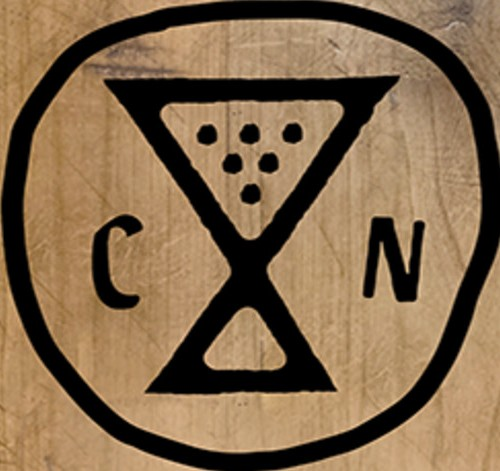

Cosa Nostra is an invite-only orginization within NDPA for outstanding students to showcase their dedication, commitment, and leadership that sets them apart from their peers. one of the requirements for the program is to complete a capstone project by the end of your 9th grade year at NDPA. After almost 3 years of hard work and dedication, the 9th grade members of Cosa Nostra have completed their projects, here's some of their handywork.

My project was an attempt at running a sports camp for underprivileged youth. With this project I was hoping to teach the skills needed for volleyball, basketball, and soccer. I would have done this by running a 3-day camp in which I would spend 1 day per sport and gather jr. High students with a background in competitive sports as volunteers. This project was going well until I attempted to contact adults and find locations for the camp. With this I emailed the city and called multiple times both of which never received a response. I was then going to gain sponsorship for the project but as I did not have a location, I was not able to receive that. These hardships really caused a problem with my project as by that time it was getting very close to the end.
Lili is in the process of writing a novel for her project. She has written a few drafts now, and is well on her way to completing the novel and potentially publishing it.
Crystal and Andrew are the reason therre are concrete benches outside. They were working on designing and implementing ceramic mosaics on the benches like they have in Parque Guell in Barcelona, Spain. They were met with scheduling conflicts and decided to make this a generational project, spanning multiple generations of Quest members willing to take up the mantle of this project.
My project for quest was to take pictures for girls' basketball so they could have keepsakes from their time at NDPA. Photography is something I love to do, and I take inspiration from my mom since Shes a photographer. Although photography wasn't my first option for my project, I'm happy I got to make all the girls happy with personalized pictures and showcase one of my favorite hobbies.
My project for Cosa Nostra is to fix a motorcycle engine. I started out by taking the engine out. Then sadly, I found out the inside was all rusted, so I had to further dismantle the engine. I have been working on cleaning parts and seeing if any need to be replaced. Parts are now clean and very few need to be replaced. To go forward I will start the process of putting it back together.
The devoloper of this webpage right here, and the server it runs on. The server runs on an old computer found at the DI for 20 dollars, and the webpage is all programmed using HTML and CSS.
Andrea is translating medical info to Spanish for local clinics to break down the language barrier that so often prevents people from being presented with proper medical care. This project will have a very large impact on this community, allowing more people to more easily access essential medical information without having to worry about a language barrier.